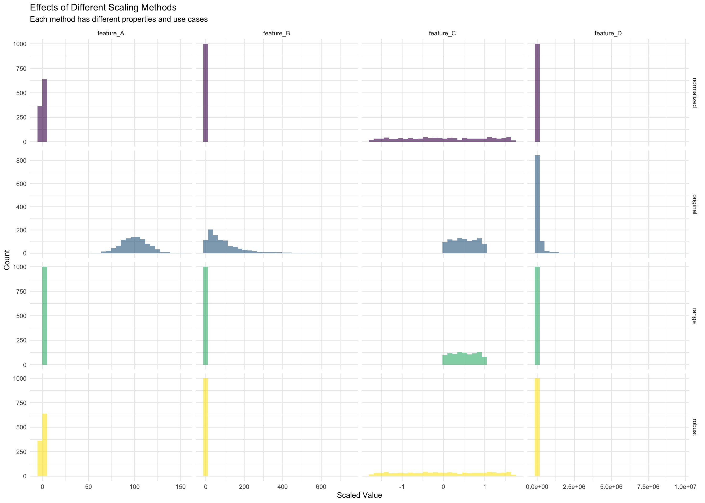
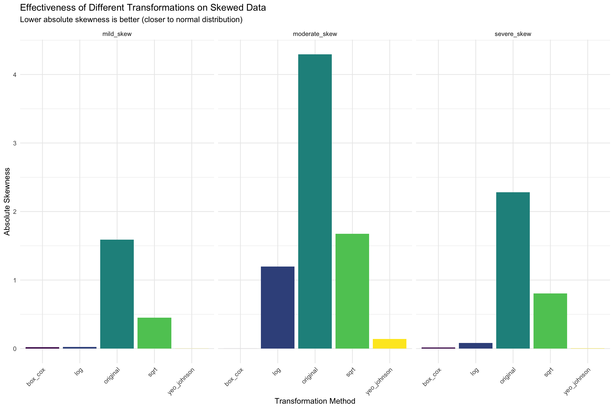
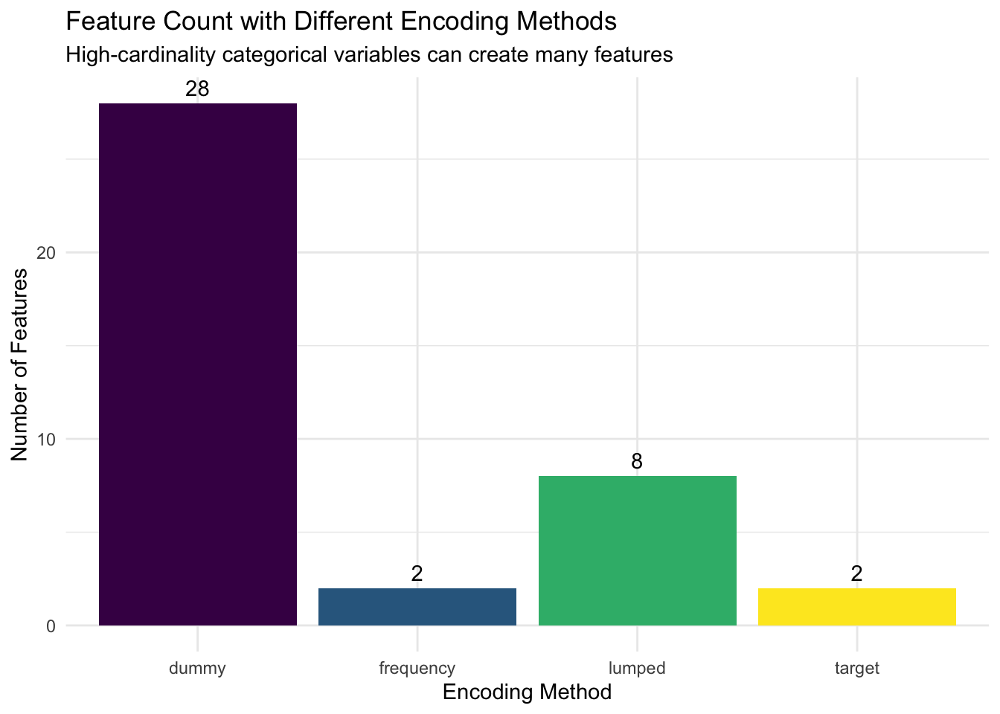
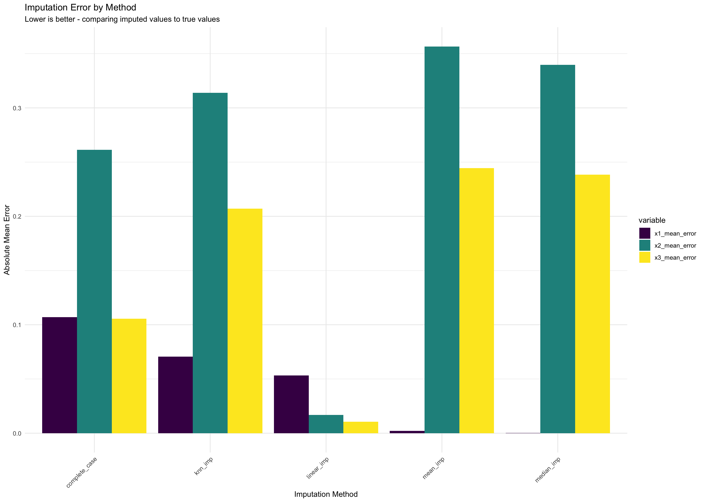
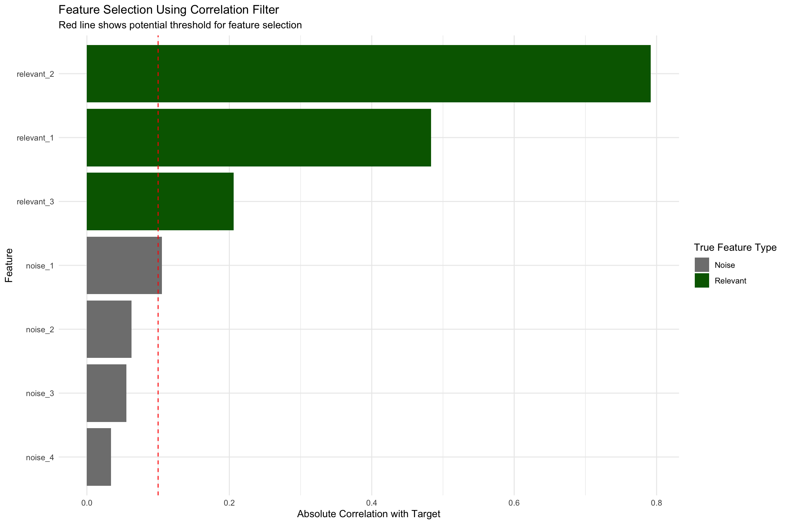
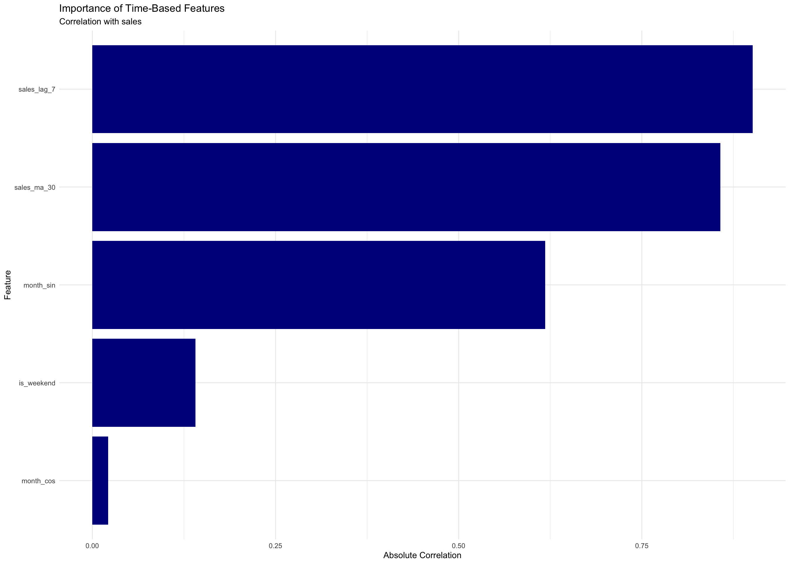
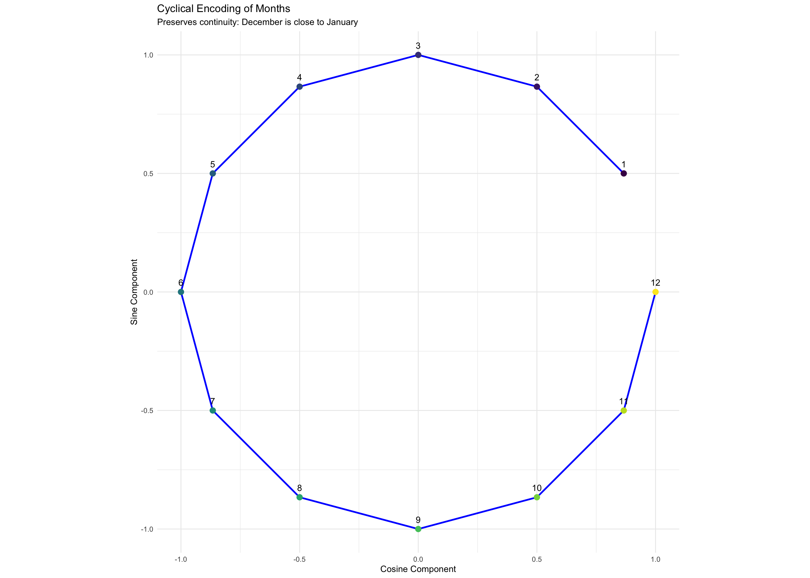
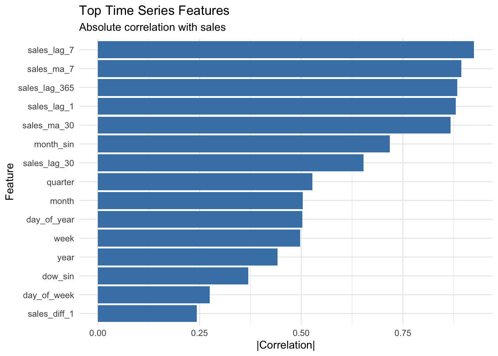

Chapter 10: Feature Engineering with recipes - The Art and Science of Data Preparation
Author
David Sarrat González, Juan R González
Published
September 29, 2025
Learning Objectives
By the end of this chapter, you will master:
The philosophy and importance of feature engineering
Creating and applying recipes in tidymodels
Numeric transformations and scaling
Handling categorical variables
Creating interaction terms and polynomial features
Dealing with missing data systematically
Feature selection and dimensionality reduction
Time-based and text features
Best practices and common pitfalls
What is Feature Engineering?
Feature engineering is the process of transforming raw data into features that better represent the underlying problem to predictive models. It’s often said that “data and features determine the upper limit of machine learning, while models and algorithms only approach this limit.”
Why Feature Engineering Matters
Think of feature engineering as translating your data into a language that your model can better understand. Even the most sophisticated algorithm will struggle with poorly prepared data, while a simple model can perform remarkably well with thoughtfully engineered features.
Consider these scenarios: - Raw timestamps → Extract hour of day, day of week, is_weekend, season - Text addresses → Extract zip code, city, distance from city center - Numerical ratios → Price per square foot instead of just price and area - Domain knowledge → Age of house at sale instead of just year built and sale year
v broom 1.0.10 v recipes 1.3.1
v dials 1.4.2 v rsample 1.3.1
v dplyr 1.1.4 v tailor 0.1.0
v ggplot2 4.0.0 v tidyr 1.3.1
v infer 1.0.9 v tune 2.0.0
v modeldata 1.5.1 v workflows 1.3.0
v parsnip 1.3.3 v workflowsets 1.1.1
v purrr 1.1.0 v yardstick 1.3.2
-- Conflicts ----------------------------------------- tidymodels_conflicts() --
x purrr::discard() masks scales::discard()
x dplyr::filter() masks stats::filter()
x dplyr::lag() masks stats::lag()
x recipes::step() masks stats::step()
library(tidyverse)
-- Attaching core tidyverse packages ------------------------ tidyverse 2.0.0 --
v forcats 1.0.0 v stringr 1.5.2
v lubridate 1.9.4 v tibble 3.3.0
v readr 2.1.5
-- Conflicts ------------------------------------------ tidyverse_conflicts() --
x readr::col_factor() masks scales::col_factor()
x purrr::discard() masks scales::discard()
x dplyr::filter() masks stats::filter()
x stringr::fixed() masks recipes::fixed()
x dplyr::lag() masks stats::lag()
x readr::spec() masks yardstick::spec()
i Use the conflicted package (<http://conflicted.r-lib.org/>) to force all conflicts to become errors
# Set theme and seedtheme_set(theme_minimal())set.seed(123)# Load example datasetsdata(ames)data(credit_data)# Create a simple example to show feature engineering impactsimple_data <-tibble(sale_date =seq(as.Date("2020-01-01"), as.Date("2022-12-31"), by ="day"),temperature =50+30*sin(2* pi *as.numeric(sale_date) /365) +rnorm(length(sale_date), 0, 5),sales =1000+200*sin(2* pi *as.numeric(sale_date) /365) +100* (wday(sale_date) %in%c(1, 7)) +# Weekend boostrnorm(length(sale_date), 0, 50))# Without feature engineering - just using date as numericbad_model <-lm(sales ~as.numeric(sale_date), data = simple_data)# With feature engineeringgood_data <- simple_data %>%mutate(month =month(sale_date),day_of_week =wday(sale_date, label =TRUE),is_weekend =wday(sale_date) %in%c(1, 7),quarter =quarter(sale_date),days_since_start =as.numeric(sale_date -min(sale_date)) )good_model <-lm(sales ~ month + is_weekend + temperature + days_since_start, data = good_data)# Compare R-squaredtibble(Model =c("Without Feature Engineering", "With Feature Engineering"),`R-squared`=c(summary(bad_model)$r.squared, summary(good_model)$r.squared)) %>% knitr::kable(digits =3)
Model
R-squared
Without Feature Engineering
0.055
With Feature Engineering
0.869
Notice the dramatic improvement! The model with engineered features captures patterns that the raw date couldn’t represent.
The recipes Package Philosophy
The recipes package provides a domain-specific language for feature engineering. Think of it like writing a recipe for a meal:
Ingredients (raw data): What you start with
Instructions (steps): How to transform the ingredients
Preparation (prep): Getting everything ready with your training data
Baking (bake): Applying the recipe to new data
This approach ensures: - Reproducibility: The same transformations applied consistently - Modularity: Easy to add, remove, or modify steps - Prevention of data leakage: Transformations learned only from training data
Creating Your First Recipe
Let’s start with a basic recipe and build complexity gradually:
# Prepare the Ames housing dataames_train <- ames %>%filter(Sale_Price >0) %>%sample_frac(0.8)ames_test <- ames %>%filter(Sale_Price >0) %>%anti_join(ames_train)# Create a basic recipebasic_recipe <-recipe(Sale_Price ~ Lot_Area + Year_Built + Overall_Cond, data = ames_train)# View the recipebasic_recipe
At this point, the recipe is just a specification - it hasn’t done anything yet. It’s like having a recipe card but not having cooked the meal.
Adding Steps to the Recipe
Now let’s add transformation steps. Each step transforms the data in a specific way:
# Enhanced recipe with multiple stepsenhanced_recipe <-recipe(Sale_Price ~ Lot_Area + Year_Built + Overall_Cond + Neighborhood + Gr_Liv_Area, data = ames_train) %>%# Step 1: Log transform the outcomestep_log(Sale_Price) %>%# Step 2: Create a new featurestep_mutate(House_Age =2010- Year_Built) %>%# Step 3: Remove the original Year_Builtstep_rm(Year_Built) %>%# Step 4: Normalize numeric predictorsstep_normalize(all_numeric_predictors()) %>%# Step 5: Create dummy variables for categorical predictorsstep_dummy(all_nominal_predictors())enhanced_recipe
Each step is performed in order, and the output of one step becomes the input to the next. This is crucial to understand - order matters!
Preparing and Baking the Recipe
Now we need to “prepare” the recipe using the training data, then “bake” it to apply the transformations:
# Prepare the recipe (learn parameters from training data)prepped_recipe <-prep(enhanced_recipe, training = ames_train)# See what was learnedprepped_recipe# Apply to training databaked_train <-bake(prepped_recipe, new_data =NULL) # NULL means use training dataglimpse(baked_train)
# Apply to test databaked_test <-bake(prepped_recipe, new_data = ames_test)# Check that dimensions match (except for rows)tibble(Dataset =c("Training", "Test"),Rows =c(nrow(baked_train), nrow(baked_test)),Columns =c(ncol(baked_train), ncol(baked_test))) %>% knitr::kable()
Dataset
Rows
Columns
Training
2344
41
Test
586
41
The key insight: prep() learns any necessary parameters (like mean and SD for normalization) from the training data, and bake() applies these learned transformations to any dataset.
Numeric Transformations
Numeric features often need transformation to work well with models. Let’s explore the most important transformations:
Scaling and Normalization
Different scaling methods serve different purposes:
# Create example data with different scalesscaling_demo <-tibble(feature_A =rnorm(1000, mean =100, sd =15), # Normal, mean=100feature_B =rexp(1000, rate =0.01), # Exponential, right-skewedfeature_C =runif(1000, min =0, max =1), # Uniform, 0-1 rangefeature_D =rlnorm(1000, meanlog =10, sdlog =2) # Log-normal, very large)# Different scaling recipesscaling_recipes <-list(original =recipe(~ ., data = scaling_demo),normalized =recipe(~ ., data = scaling_demo) %>%step_normalize(all_predictors()),range =recipe(~ ., data = scaling_demo) %>%step_range(all_predictors(), min =0, max =1),robust =recipe(~ ., data = scaling_demo) %>%step_center(all_predictors()) %>%# Center using medianstep_scale(all_predictors()) # Scale using standard deviation)# Apply each recipescaled_data <-map_df(names(scaling_recipes), function(name) { scaling_recipes[[name]] %>%prep() %>%bake(new_data =NULL) %>%mutate(scaling_method = name) %>%pivot_longer(cols =-scaling_method, names_to ="feature", values_to ="value")})# Visualize the effectsggplot(scaled_data, aes(x = value, fill = scaling_method)) +geom_histogram(bins =30, alpha =0.6, position ="identity") +facet_grid(scaling_method ~ feature, scales ="free") +scale_fill_viridis_d() +labs(title ="Effects of Different Scaling Methods",subtitle ="Each method has different properties and use cases",x ="Scaled Value",y ="Count" ) +theme(legend.position ="none")

Key insights about scaling: - Normalization (z-score): Centers at 0, scales by standard deviation. Good for normally distributed features. - Range scaling: Forces values between min and max. Preserves shape but sensitive to outliers. - Robust scaling: Uses median and MAD, resistant to outliers.
Transformations for Skewed Data
Many real-world variables are skewed. Let’s handle them properly:
# Create skewed dataskewed_data <-tibble(mild_skew =rgamma(1000, shape =2, rate =0.5),moderate_skew =rlnorm(1000, meanlog =0, sdlog =1),severe_skew =rexp(1000, rate =0.1),outcome =rnorm(1000))# Different transformation recipestransform_recipes <-list(original =recipe(outcome ~ ., data = skewed_data),log =recipe(outcome ~ ., data = skewed_data) %>%step_log(all_predictors(), offset =1), # offset prevents log(0)sqrt =recipe(outcome ~ ., data = skewed_data) %>%step_sqrt(all_predictors()),yeo_johnson =recipe(outcome ~ ., data = skewed_data) %>%step_YeoJohnson(all_predictors()), # Automatic optimal transformationbox_cox =recipe(outcome ~ ., data = skewed_data) %>%step_BoxCox(all_predictors()) # Requires positive values)# Apply transformations and calculate skewnessskewness_comparison <-map_df(names(transform_recipes), function(name) { transformed <- transform_recipes[[name]] %>%prep() %>%bake(new_data =NULL)tibble(method = name,mild_skew = moments::skewness(transformed$mild_skew),moderate_skew = moments::skewness(transformed$moderate_skew),severe_skew = moments::skewness(transformed$severe_skew) )})# Display resultsskewness_comparison %>%pivot_longer(cols =-method, names_to ="feature", values_to ="skewness") %>%ggplot(aes(x = method, y =abs(skewness), fill = method)) +geom_col() +facet_wrap(~feature) +scale_fill_viridis_d() +labs(title ="Effectiveness of Different Transformations on Skewed Data",subtitle ="Lower absolute skewness is better (closer to normal distribution)",x ="Transformation Method",y ="Absolute Skewness" ) +theme(axis.text.x =element_text(angle =45, hjust =1),legend.position ="none")

The Yeo-Johnson transformation is particularly useful because it: - Automatically finds the optimal transformation parameter - Handles both positive and negative values - Often achieves near-normal distributions
Handling Categorical Variables
Categorical variables require special treatment. The approach depends on the model type and the nature of the categories.
Dummy Variables (One-Hot Encoding)
This is the most common approach for linear models:
Notice how each category becomes its own binary column, except one category is dropped (reference level) to avoid perfect multicollinearity.
Advanced Categorical Encoding
For high-cardinality categorical variables (many unique values), simple dummy encoding can create too many features:
# Create high-cardinality examplehigh_card_data <- ames_train %>%select(Sale_Price, Neighborhood, MS_SubClass) %>%mutate(Neighborhood_Freq =n(),.by = Neighborhood )# Different encoding strategiesencoding_recipes <-list(# Standard dummy encodingdummy =recipe(Sale_Price ~ Neighborhood, data = high_card_data) %>%step_dummy(Neighborhood),# Frequency encodingfrequency =recipe(Sale_Price ~ Neighborhood, data = high_card_data) %>%step_mutate(Neighborhood_Freq =n(), .by = Neighborhood) %>%step_rm(Neighborhood),# Target encoding (mean of target for each category)target =recipe(Sale_Price ~ Neighborhood, data = high_card_data) %>%step_mutate(Neighborhood_Mean =mean(Sale_Price, na.rm =TRUE),.by = Neighborhood ) %>%step_rm(Neighborhood),# Lumping rare categorieslumped =recipe(Sale_Price ~ Neighborhood, data = high_card_data) %>%step_other(Neighborhood, threshold =0.05) %>%# Combine rare levelsstep_dummy(Neighborhood))# Compare number of features createdfeature_counts <-map_df(names(encoding_recipes), function(name) { n_features <- encoding_recipes[[name]] %>%prep() %>%bake(new_data =NULL) %>%select(-Sale_Price) %>%ncol()tibble(method = name,n_features = n_features )})feature_counts %>%ggplot(aes(x = method, y = n_features, fill = method)) +geom_col() +geom_text(aes(label = n_features), vjust =-0.5) +scale_fill_viridis_d() +labs(title ="Feature Count with Different Encoding Methods",subtitle ="High-cardinality categorical variables can create many features",x ="Encoding Method",y ="Number of Features" ) +theme(legend.position ="none")

Each method has trade-offs: - Dummy encoding: Simple but creates many features - Frequency encoding: Single feature but loses category identity - Target encoding: Powerful but risks overfitting - Lumping: Reduces features while preserving main categories
Creating Interaction Terms
Interactions capture relationships between features that aren’t additive:
# Generate data with interaction effectset.seed(123)interaction_data <-tibble(x1 =runif(500, 0, 10),x2 =runif(500, 0, 10),# True relationship includes interactiony =10+2*x1 +3*x2 +0.5*x1*x2 +rnorm(500, 0, 2))# Models with and without interactionno_interaction_recipe <-recipe(y ~ x1 + x2, data = interaction_data)with_interaction_recipe <-recipe(y ~ x1 + x2, data = interaction_data) %>%step_interact(terms =~ x1:x2)# Fit both modelsno_int_fit <-workflow() %>%add_recipe(no_interaction_recipe) %>%add_model(linear_reg()) %>%fit(interaction_data)with_int_fit <-workflow() %>%add_recipe(with_interaction_recipe) %>%add_model(linear_reg()) %>%fit(interaction_data)# Create prediction surfacegrid <-expand_grid(x1 =seq(0, 10, length.out =50),x2 =seq(0, 10, length.out =50))grid_no_int <- grid %>%mutate(prediction =predict(no_int_fit, grid)$.pred,model ="Without Interaction" )grid_with_int <- grid %>%mutate(prediction =predict(with_int_fit, grid)$.pred,model ="With Interaction" )# Visualize the differencebind_rows(grid_no_int, grid_with_int) %>%ggplot(aes(x = x1, y = x2, fill = prediction)) +geom_tile() +scale_fill_viridis_c() +facet_wrap(~model) +labs(title ="Effect of Including Interaction Terms",subtitle ="Interaction allows the effect of x1 to depend on x2",x ="Feature 1",y ="Feature 2",fill ="Predicted\nValue" )
The interaction term allows the model to capture how the effect of one variable depends on another. This is crucial in many real-world scenarios: - Price elasticity depending on income level - Drug effectiveness depending on patient age - Marketing response depending on customer segment
Handling Missing Data
Missing data is ubiquitous in real-world datasets. The strategy depends on why data is missing:
Types of Missingness
Missing Completely at Random (MCAR): Missingness is independent of all variables
Missing at Random (MAR): Missingness depends on observed variables
Missing Not at Random (MNAR): Missingness depends on the missing value itself
Let’s explore different imputation strategies:
# Create data with different missing patternsset.seed(123)missing_data <-tibble(x1 =rnorm(1000),x2 =rnorm(1000),x3 = x1 + x2 +rnorm(1000, 0, 0.5),y =2*x1 +3*x2 + x3 +rnorm(1000))# Introduce different missing patternsmissing_data <- missing_data %>%mutate(# MCAR: Random 20% missingx1_mcar =ifelse(runif(n()) <0.2, NA, x1),# MAR: Missing depends on x2x2_mar =ifelse(x2 <quantile(x2, 0.2), NA, x2),# MNAR: Large values more likely missingx3_mnar =ifelse(x3 >quantile(x3, 0.8) &runif(n()) <0.5, NA, x3) )# Different imputation strategiesimputation_recipes <-list(# Remove rows with missing datacomplete_case =recipe(y ~ x1_mcar + x2_mar + x3_mnar, data = missing_data) %>%step_naomit(all_predictors()),# Mean imputationmean_imp =recipe(y ~ x1_mcar + x2_mar + x3_mnar, data = missing_data) %>%step_impute_mean(all_predictors()),# Median imputation (robust to outliers)median_imp =recipe(y ~ x1_mcar + x2_mar + x3_mnar, data = missing_data) %>%step_impute_median(all_predictors()),# K-nearest neighbors imputationknn_imp =recipe(y ~ x1_mcar + x2_mar + x3_mnar, data = missing_data) %>%step_impute_knn(all_predictors(), neighbors =5),# Linear imputation (using other variables)linear_imp =recipe(y ~ x1_mcar + x2_mar + x3_mnar, data = missing_data) %>%step_impute_linear(x1_mcar, impute_with =imp_vars(x2_mar, x3_mnar)) %>%step_impute_linear(x2_mar, impute_with =imp_vars(x1_mcar, x3_mnar)) %>%step_impute_linear(x3_mnar, impute_with =imp_vars(x1_mcar, x2_mar)))# Apply imputation and evaluateimputation_results <-map_df(names(imputation_recipes), function(name) { imputed <- imputation_recipes[[name]] %>%prep() %>%bake(new_data =NULL)# Calculate statisticstibble(method = name,n_rows =nrow(imputed),x1_mean_error =mean(imputed$x1_mcar - missing_data$x1[!is.na(imputed$x1_mcar)], na.rm =TRUE),x2_mean_error =mean(imputed$x2_mar - missing_data$x2[!is.na(imputed$x2_mar)], na.rm =TRUE),x3_mean_error =mean(imputed$x3_mnar - missing_data$x3[!is.na(imputed$x3_mnar)], na.rm =TRUE) )})# Visualize imputation qualityimputation_results %>%pivot_longer(cols =contains("error"), names_to ="variable", values_to ="error") %>%ggplot(aes(x = method, y =abs(error), fill = variable)) +geom_col(position ="dodge") +scale_fill_viridis_d() +labs(title ="Imputation Error by Method",subtitle ="Lower is better - comparing imputed values to true values",x ="Imputation Method",y ="Absolute Mean Error" ) +theme(axis.text.x =element_text(angle =45, hjust =1))

# Show data loss with complete casetibble(Method =c("Complete Case", "Imputation Methods"),`Rows Retained`=c( imputation_results %>%filter(method =="complete_case") %>%pull(n_rows),1000 ),`Percentage`=c( imputation_results %>%filter(method =="complete_case") %>%pull(n_rows) /10,100 )) %>% knitr::kable()
Method
Rows Retained
Percentage
Complete Case
551
55.1
Imputation Methods
1000
100.0
Key insights about imputation: - Complete case analysis loses a lot of data - Mean/median imputation is simple but ignores relationships - KNN imputation uses similar observations - Linear imputation preserves linear relationships - Choice depends on missing mechanism and data structure
Feature Selection and Dimensionality Reduction
Too many features can lead to overfitting and computational issues. Let’s explore methods to reduce dimensionality:
Filter Methods
Filter methods select features based on statistical tests:
# Create data with relevant and irrelevant featuresset.seed(123)feature_data <-tibble(# Relevant featuresrelevant_1 =rnorm(500),relevant_2 =rnorm(500),relevant_3 =rnorm(500),# Irrelevant featuresnoise_1 =rnorm(500),noise_2 =rnorm(500),noise_3 =rnorm(500),noise_4 =rnorm(500),# Target depends only on relevant featurestarget =2*relevant_1 +3*relevant_2 - relevant_3 +rnorm(500, 0, 0.5))# Calculate correlations with targetcorrelations <- feature_data %>%select(-target) %>%map_dbl(~cor(., feature_data$target, use ="complete.obs")) %>%enframe(name ="feature", value ="correlation") %>%mutate(abs_correlation =abs(correlation),feature_type =ifelse(str_detect(feature, "relevant"), "Relevant", "Noise") )# Visualize correlationsggplot(correlations, aes(x =reorder(feature, abs_correlation), y = abs_correlation, fill = feature_type)) +geom_col() +coord_flip() +scale_fill_manual(values =c("Relevant"="darkgreen", "Noise"="gray50")) +geom_hline(yintercept =0.1, linetype ="dashed", color ="red") +labs(title ="Feature Selection Using Correlation Filter",subtitle ="Red line shows potential threshold for feature selection",x ="Feature",y ="Absolute Correlation with Target",fill ="True Feature Type" )

# Recipe with correlation filterfiltered_recipe <-recipe(target ~ ., data = feature_data) %>%step_corr(all_predictors(), threshold =0.9) %>%# Remove highly correlated featuresstep_rm(all_predictors(), -all_outcomes(), skip =FALSE,threshold =0.1) # This would remove low correlation features# Near-zero variance filternzv_recipe <-recipe(target ~ ., data = feature_data) %>%step_nzv(all_predictors()) # Remove features with near-zero variance
Principal Component Analysis (PCA)
PCA creates new features that are linear combinations of original features:
# Create correlated features for PCA demonstrationpca_data <-tibble(x1 =rnorm(500),x2 = x1 +rnorm(500, 0, 0.5), # Correlated with x1x3 =rnorm(500),x4 = x3 +rnorm(500, 0, 0.5), # Correlated with x3x5 =rnorm(500),y = x1 + x3 +rnorm(500, 0, 0.5))# PCA recipepca_recipe <-recipe(y ~ ., data = pca_data) %>%step_normalize(all_predictors()) %>%# Important: normalize before PCAstep_pca(all_predictors(), num_comp =3) # Keep 3 components# Prepare and examinepca_prep <-prep(pca_recipe)pca_result <-bake(pca_prep, new_data =NULL)# Extract loadingspca_loadings <-tidy(pca_prep, 2) %>%# 2nd step is PCAfilter(component %in%paste0("PC", 1:3)) %>%mutate(component =factor(component, levels =paste0("PC", 1:3)) )# Visualize loadingsggplot(pca_loadings, aes(x = terms, y = value, fill = value >0)) +geom_col() +facet_wrap(~component) +coord_flip() +scale_fill_manual(values =c("FALSE"="red", "TRUE"="blue")) +labs(title ="PCA Loadings",subtitle ="How original features contribute to each principal component",x ="Original Feature",y ="Loading",fill ="Sign" ) +theme(legend.position ="none")
Time series data requires special feature engineering:
# Create time series datatime_data <-tibble(date =seq(as.Date("2020-01-01"), as.Date("2022-12-31"), by ="day"),base_value =1000,trend =seq(0, 200, length.out =length(date)),seasonal =100*sin(2* pi *as.numeric(date) /365),weekly =50*sin(2* pi *wday(date) /7),noise =rnorm(length(date), 0, 30),sales = base_value + trend + seasonal + weekly + noise)# Time-based feature engineeringtime_features <- time_data %>%mutate(# Basic time componentsyear =year(date),month =month(date),day =day(date),day_of_week =wday(date, label =TRUE),day_of_year =yday(date),week_of_year =week(date),quarter =quarter(date),# Cyclical encoding (preserves continuity)month_sin =sin(2* pi * month /12),month_cos =cos(2* pi * month /12),day_sin =sin(2* pi * day /31),day_cos =cos(2* pi * day /31),# Binary indicatorsis_weekend =wday(date) %in%c(1, 7),is_month_start = day <=7,is_month_end = day >=day(ceiling_date(date, "month") -days(7)),# Lag featuressales_lag_1 =lag(sales, 1),sales_lag_7 =lag(sales, 7),sales_lag_30 =lag(sales, 30),# Rolling statisticssales_ma_7 = zoo::rollmean(sales, 7, fill =NA, align ="right"),sales_ma_30 = zoo::rollmean(sales, 30, fill =NA, align ="right"),sales_std_7 = zoo::rollapply(sales, 7, sd, fill =NA, align ="right") )# Visualize some engineered featuresfeature_importance <- time_features %>%drop_na() %>%select(sales, month_sin, month_cos, is_weekend, sales_lag_7, sales_ma_30) %>%cor() %>%as.data.frame() %>%rownames_to_column("feature") %>%filter(feature !="sales") %>%select(feature, correlation = sales) %>%arrange(desc(abs(correlation)))ggplot(feature_importance, aes(x =reorder(feature, abs(correlation)), y =abs(correlation))) +geom_col(fill ="darkblue") +coord_flip() +labs(title ="Importance of Time-Based Features",subtitle ="Correlation with sales",x ="Feature",y ="Absolute Correlation" )

# Show cyclical encodingcyclical_demo <- time_features %>%select(month, month_sin, month_cos) %>%distinct() %>%arrange(month)ggplot(cyclical_demo, aes(x = month_cos, y = month_sin)) +geom_path(color ="blue", linewidth =1) +geom_point(aes(color =factor(month)), size =3) +geom_text(aes(label = month), vjust =-1) +coord_equal() +scale_color_viridis_d() +labs(title ="Cyclical Encoding of Months",subtitle ="Preserves continuity: December is close to January",x ="Cosine Component",y ="Sine Component" ) +theme(legend.position ="none")

Time features are crucial for: - Capturing seasonality and trends - Accounting for day-of-week effects - Incorporating historical information (lags) - Smoothing noisy signals (moving averages)
Text Features (Brief Introduction)
Text data requires specialized preprocessing:
# Simple text feature engineering exampletext_data <-tibble(id =1:5,review =c("This product is absolutely amazing! Best purchase ever!","Terrible quality. Very disappointed. Would not recommend.","Good value for money. Satisfied with the purchase.","Excellent service and fast delivery. Five stars!","Product broke after one day. Complete waste of money." ),rating =c(5, 1, 4, 5, 1))# Text feature recipe using textrecipestext_recipe <-recipe(rating ~ review, data = text_data) %>%# Tokenize textstep_tokenize(review) %>%# Remove stop wordsstep_stopwords(review) %>%# Create n-gramsstep_ngram(review, num_tokens =2) %>%# Convert to term frequencystep_tf(review, weight_scheme ="binary") %>%# Optionally: TF-IDF weighting# step_tfidf(review) %>%# Keep only most common termsstep_tokenfilter(review, max_tokens =20)# Note: This is just a demonstration - real text processing needs more data
Text features can include: - Word counts and frequencies - N-grams (sequences of words) - TF-IDF weights - Sentiment scores - Word embeddings
Best Practices and Common Pitfalls
Best Practices
Always split before feature engineering
Prevents data leakage
Ensures fair evaluation
Order of operations matters
Impute missing values before normalization
Create interactions after dummy encoding
Normalize after all transformations
Keep it simple initially
Start with basic features
Add complexity gradually
Validate improvements
Document your choices
Why each transformation?
What domain knowledge informed decisions?
Common Pitfalls to Avoid
Let’s demonstrate some common mistakes:
# Create split if not already doneif (!exists("ames_split")) {set.seed(123) ames_split <-initial_split(ames, prop =0.75, strata = Sale_Price) ames_train <-training(ames_split) ames_test <-testing(ames_split)}# WRONG: Normalizing before splitting# This leaks information from test set into trainingwrong_approach <- ames %>%mutate(Gr_Liv_Area_scaled =scale(Gr_Liv_Area)[,1]) %>%# Uses ALL data!initial_split()# RIGHT: Normalize within reciperight_recipe <-recipe(Sale_Price ~ Gr_Liv_Area, data =training(ames_split)) %>%step_normalize(Gr_Liv_Area) # Will use only training data statistics# WRONG: Creating too many featuresoverengineered_recipe <-recipe(Sale_Price ~ ., data = ames_train) %>%step_poly(all_numeric_predictors(), degree =5) %>%# Too many polynomial termsstep_interact(terms =~all_numeric_predictors()^2) # All 2-way interactions# RIGHT: Thoughtful feature engineeringthoughtful_recipe <-recipe(Sale_Price ~ ., data = ames_train) %>%step_log(Sale_Price) %>%step_poly(Gr_Liv_Area, degree =2) %>%# Only where neededstep_interact(terms =~ Gr_Liv_Area:Overall_Cond) # Specific, meaningful interaction
Complete Example: Putting It All Together
Let’s create a comprehensive feature engineering pipeline:
# Fit a model with the engineered featuresrf_spec <-rand_forest(trees =100) %>%set_engine("ranger") %>%set_mode("classification")workflow() %>%add_recipe(comprehensive_recipe) %>%add_model(rf_spec) %>%fit(credit_train) %>%predict(credit_test) %>%bind_cols(credit_test) %>%accuracy(truth = Status, estimate = .pred_class)
# A tibble: 1 x 3
.metric .estimator .estimate
<chr> <chr> <dbl>
1 accuracy binary 0.777
Exercises
Exercise 1: Engineer Features for House Prices
Create a comprehensive feature engineering pipeline for the Ames housing data:
[1] "Created 103 features from 73 original features"
Exercise 2: Handle High-Cardinality Categorical
Work with a high-cardinality categorical variable:
# Your solution# Create synthetic high-cardinality datahigh_card_ex <-tibble(category =sample(paste0("Cat_", 1:100), 1000, replace =TRUE),value =rnorm(1000),target =rnorm(1000)) %>%mutate(# Make target depend somewhat on categorytarget = target +as.numeric(factor(category)) /20 )# Try different encoding strategiesstrategies <-list(# Frequency encodingfrequency =recipe(target ~ ., data = high_card_ex) %>%step_mutate(cat_freq =n(), .by = category) %>%step_rm(category),# Target encoding with smoothingtarget_enc =recipe(target ~ ., data = high_card_ex) %>%step_mutate(cat_mean =mean(target),cat_count =n(),.by = category ) %>%step_mutate(# Smooth with global mean for rare categoriescat_smooth = (cat_mean * cat_count +mean(target) *10) / (cat_count +10) ) %>%step_rm(category, cat_mean, cat_count),# Embedding-like (PCA on dummies)embedding =recipe(target ~ ., data = high_card_ex) %>%step_dummy(category) %>%step_pca(starts_with("category_"), num_comp =10))# Compare approachescomparison <-map_df(names(strategies), function(name) { prepped <-prep(strategies[[name]]) baked <-bake(prepped, new_data =NULL)tibble(method = name,n_features =ncol(baked) -1 )})print(comparison)
# A tibble: 3 x 2
method n_features
<chr> <dbl>
1 frequency 3
2 target_enc 3
3 embedding 11
Exercise 3: Time Series Feature Engineering
Create features for time series prediction:
# Your solution# Generate time series datats_exercise <-tibble(date =seq(as.Date("2021-01-01"), as.Date("2023-12-31"), by ="day")) %>%mutate(trend =row_number() /n() *100,seasonal =50*sin(2* pi *yday(date) /365),weekly =20*sin(2* pi *wday(date) /7),noise =rnorm(n(), 0, 10),sales =1000+ trend + seasonal + weekly + noise )# Create time featurests_features <- ts_exercise %>%mutate(# Calendar featuresyear =year(date),month =month(date),week =week(date),day_of_week =wday(date),day_of_month =day(date),day_of_year =yday(date),quarter =quarter(date),# Cyclical encodingmonth_sin =sin(2* pi * month /12),month_cos =cos(2* pi * month /12),dow_sin =sin(2* pi * day_of_week /7),dow_cos =cos(2* pi * day_of_week /7),# Indicatorsis_weekend = day_of_week %in%c(1, 7),is_month_start = day_of_month <=3,is_month_end = day_of_month >=28,# Lag featuressales_lag_1 =lag(sales, 1),sales_lag_7 =lag(sales, 7),sales_lag_30 =lag(sales, 30),sales_lag_365 =lag(sales, 365),# Rolling statisticssales_ma_7 = zoo::rollmean(sales, 7, fill =NA, align ="right"),sales_ma_30 = zoo::rollmean(sales, 30, fill =NA, align ="right"),sales_std_7 = zoo::rollapply(sales, 7, sd, fill =NA, align ="right"),sales_std_30 = zoo::rollapply(sales, 30, sd, fill =NA, align ="right"),# Differencessales_diff_1 = sales -lag(sales, 1),sales_diff_7 = sales -lag(sales, 7) ) %>%drop_na()# Evaluate feature importancefeature_cors <- ts_features %>%select(-date, -trend, -seasonal, -weekly, -noise) %>%select(-sales) %>%map_dbl(~cor(., ts_features$sales)) %>%enframe(name ="feature", value ="correlation") %>%arrange(desc(abs(correlation))) %>%head(15)ggplot(feature_cors, aes(x =reorder(feature, abs(correlation)), y =abs(correlation))) +geom_col(fill ="steelblue") +coord_flip() +labs(title ="Top Time Series Features",subtitle ="Absolute correlation with sales",x ="Feature",y ="|Correlation|" )

Summary
Feature engineering is both an art and a science. You’ve learned:
✅ Core concepts: Why feature engineering matters and how it works
✅ Numeric transformations: Scaling, normalization, handling skewness
✅ Categorical encoding: Dummies, target encoding, handling high cardinality
✅ Interaction terms: Capturing non-additive relationships
✅ Missing data strategies: Various imputation methods and when to use them
✅ Dimensionality reduction: PCA and feature selection
✅ Time features: Extracting temporal patterns
✅ Best practices: Avoiding leakage, proper ordering, validation
Remember: - Feature engineering often has more impact than model selection - Domain knowledge is invaluable for creating meaningful features - Always validate that engineered features improve performance - Keep transformations in recipes for reproducibility - Start simple and add complexity gradually
What’s Next?
In Chapter 11, we’ll explore parsnip for unified model specification across different engines.
---title: "Chapter 10: Feature Engineering with recipes - The Art and Science of Data Preparation"author: "David Sarrat González, Juan R González"date: todayformat: html: code-fold: false code-tools: true---## Learning ObjectivesBy the end of this chapter, you will master:- The philosophy and importance of feature engineering- Creating and applying recipes in tidymodels- Numeric transformations and scaling- Handling categorical variables- Creating interaction terms and polynomial features- Dealing with missing data systematically- Feature selection and dimensionality reduction- Time-based and text features- Best practices and common pitfalls## What is Feature Engineering?Feature engineering is the process of transforming raw data into features that better represent the underlying problem to predictive models. It's often said that "data and features determine the upper limit of machine learning, while models and algorithms only approach this limit."### Why Feature Engineering MattersThink of feature engineering as translating your data into a language that your model can better understand. Even the most sophisticated algorithm will struggle with poorly prepared data, while a simple model can perform remarkably well with thoughtfully engineered features.Consider these scenarios:- **Raw timestamps** → Extract hour of day, day of week, is_weekend, season- **Text addresses** → Extract zip code, city, distance from city center- **Numerical ratios** → Price per square foot instead of just price and area- **Domain knowledge** → Age of house at sale instead of just year built and sale yearLet's see this in action:```{r}#| message: truelibrary(tidymodels)library(tidyverse)library(lubridate)library(textrecipes)library(themis)library(corrplot)# Set theme and seedtheme_set(theme_minimal())set.seed(123)# Load example datasetsdata(ames)data(credit_data)# Create a simple example to show feature engineering impactsimple_data <-tibble(sale_date =seq(as.Date("2020-01-01"), as.Date("2022-12-31"), by ="day"),temperature =50+30*sin(2* pi *as.numeric(sale_date) /365) +rnorm(length(sale_date), 0, 5),sales =1000+200*sin(2* pi *as.numeric(sale_date) /365) +100* (wday(sale_date) %in%c(1, 7)) +# Weekend boostrnorm(length(sale_date), 0, 50))# Without feature engineering - just using date as numericbad_model <-lm(sales ~as.numeric(sale_date), data = simple_data)# With feature engineeringgood_data <- simple_data %>%mutate(month =month(sale_date),day_of_week =wday(sale_date, label =TRUE),is_weekend =wday(sale_date) %in%c(1, 7),quarter =quarter(sale_date),days_since_start =as.numeric(sale_date -min(sale_date)) )good_model <-lm(sales ~ month + is_weekend + temperature + days_since_start, data = good_data)# Compare R-squaredtibble(Model =c("Without Feature Engineering", "With Feature Engineering"),`R-squared`=c(summary(bad_model)$r.squared, summary(good_model)$r.squared)) %>% knitr::kable(digits =3)```Notice the dramatic improvement! The model with engineered features captures patterns that the raw date couldn't represent.## The recipes Package PhilosophyThe `recipes` package provides a domain-specific language for feature engineering. Think of it like writing a recipe for a meal:1. **Ingredients** (raw data): What you start with2. **Instructions** (steps): How to transform the ingredients3. **Preparation** (prep): Getting everything ready with your training data4. **Baking** (bake): Applying the recipe to new dataThis approach ensures:- **Reproducibility**: The same transformations applied consistently- **Modularity**: Easy to add, remove, or modify steps- **Prevention of data leakage**: Transformations learned only from training data## Creating Your First RecipeLet's start with a basic recipe and build complexity gradually:```{r}# Prepare the Ames housing dataames_train <- ames %>%filter(Sale_Price >0) %>%sample_frac(0.8)ames_test <- ames %>%filter(Sale_Price >0) %>%anti_join(ames_train)# Create a basic recipebasic_recipe <-recipe(Sale_Price ~ Lot_Area + Year_Built + Overall_Cond, data = ames_train)# View the recipebasic_recipe```At this point, the recipe is just a specification - it hasn't done anything yet. It's like having a recipe card but not having cooked the meal.### Adding Steps to the RecipeNow let's add transformation steps. Each step transforms the data in a specific way:```{r}# Enhanced recipe with multiple stepsenhanced_recipe <-recipe(Sale_Price ~ Lot_Area + Year_Built + Overall_Cond + Neighborhood + Gr_Liv_Area, data = ames_train) %>%# Step 1: Log transform the outcomestep_log(Sale_Price) %>%# Step 2: Create a new featurestep_mutate(House_Age =2010- Year_Built) %>%# Step 3: Remove the original Year_Builtstep_rm(Year_Built) %>%# Step 4: Normalize numeric predictorsstep_normalize(all_numeric_predictors()) %>%# Step 5: Create dummy variables for categorical predictorsstep_dummy(all_nominal_predictors())enhanced_recipe```Each step is performed in order, and the output of one step becomes the input to the next. This is crucial to understand - order matters!### Preparing and Baking the RecipeNow we need to "prepare" the recipe using the training data, then "bake" it to apply the transformations:```{r}# Prepare the recipe (learn parameters from training data)prepped_recipe <-prep(enhanced_recipe, training = ames_train)# See what was learnedprepped_recipe# Apply to training databaked_train <-bake(prepped_recipe, new_data =NULL) # NULL means use training dataglimpse(baked_train)# Apply to test databaked_test <-bake(prepped_recipe, new_data = ames_test)# Check that dimensions match (except for rows)tibble(Dataset =c("Training", "Test"),Rows =c(nrow(baked_train), nrow(baked_test)),Columns =c(ncol(baked_train), ncol(baked_test))) %>% knitr::kable()```The key insight: `prep()` learns any necessary parameters (like mean and SD for normalization) from the training data, and `bake()` applies these learned transformations to any dataset.## Numeric TransformationsNumeric features often need transformation to work well with models. Let's explore the most important transformations:### Scaling and NormalizationDifferent scaling methods serve different purposes:```{r}#| fig-width: 14#| fig-height: 10# Create example data with different scalesscaling_demo <-tibble(feature_A =rnorm(1000, mean =100, sd =15), # Normal, mean=100feature_B =rexp(1000, rate =0.01), # Exponential, right-skewedfeature_C =runif(1000, min =0, max =1), # Uniform, 0-1 rangefeature_D =rlnorm(1000, meanlog =10, sdlog =2) # Log-normal, very large)# Different scaling recipesscaling_recipes <-list(original =recipe(~ ., data = scaling_demo),normalized =recipe(~ ., data = scaling_demo) %>%step_normalize(all_predictors()),range =recipe(~ ., data = scaling_demo) %>%step_range(all_predictors(), min =0, max =1),robust =recipe(~ ., data = scaling_demo) %>%step_center(all_predictors()) %>%# Center using medianstep_scale(all_predictors()) # Scale using standard deviation)# Apply each recipescaled_data <-map_df(names(scaling_recipes), function(name) { scaling_recipes[[name]] %>%prep() %>%bake(new_data =NULL) %>%mutate(scaling_method = name) %>%pivot_longer(cols =-scaling_method, names_to ="feature", values_to ="value")})# Visualize the effectsggplot(scaled_data, aes(x = value, fill = scaling_method)) +geom_histogram(bins =30, alpha =0.6, position ="identity") +facet_grid(scaling_method ~ feature, scales ="free") +scale_fill_viridis_d() +labs(title ="Effects of Different Scaling Methods",subtitle ="Each method has different properties and use cases",x ="Scaled Value",y ="Count" ) +theme(legend.position ="none")```Key insights about scaling:- **Normalization** (z-score): Centers at 0, scales by standard deviation. Good for normally distributed features.- **Range scaling**: Forces values between min and max. Preserves shape but sensitive to outliers.- **Robust scaling**: Uses median and MAD, resistant to outliers.### Transformations for Skewed DataMany real-world variables are skewed. Let's handle them properly:```{r}#| fig-width: 12#| fig-height: 8# Create skewed dataskewed_data <-tibble(mild_skew =rgamma(1000, shape =2, rate =0.5),moderate_skew =rlnorm(1000, meanlog =0, sdlog =1),severe_skew =rexp(1000, rate =0.1),outcome =rnorm(1000))# Different transformation recipestransform_recipes <-list(original =recipe(outcome ~ ., data = skewed_data),log =recipe(outcome ~ ., data = skewed_data) %>%step_log(all_predictors(), offset =1), # offset prevents log(0)sqrt =recipe(outcome ~ ., data = skewed_data) %>%step_sqrt(all_predictors()),yeo_johnson =recipe(outcome ~ ., data = skewed_data) %>%step_YeoJohnson(all_predictors()), # Automatic optimal transformationbox_cox =recipe(outcome ~ ., data = skewed_data) %>%step_BoxCox(all_predictors()) # Requires positive values)# Apply transformations and calculate skewnessskewness_comparison <-map_df(names(transform_recipes), function(name) { transformed <- transform_recipes[[name]] %>%prep() %>%bake(new_data =NULL)tibble(method = name,mild_skew = moments::skewness(transformed$mild_skew),moderate_skew = moments::skewness(transformed$moderate_skew),severe_skew = moments::skewness(transformed$severe_skew) )})# Display resultsskewness_comparison %>%pivot_longer(cols =-method, names_to ="feature", values_to ="skewness") %>%ggplot(aes(x = method, y =abs(skewness), fill = method)) +geom_col() +facet_wrap(~feature) +scale_fill_viridis_d() +labs(title ="Effectiveness of Different Transformations on Skewed Data",subtitle ="Lower absolute skewness is better (closer to normal distribution)",x ="Transformation Method",y ="Absolute Skewness" ) +theme(axis.text.x =element_text(angle =45, hjust =1),legend.position ="none")```The Yeo-Johnson transformation is particularly useful because it:- Automatically finds the optimal transformation parameter- Handles both positive and negative values- Often achieves near-normal distributions## Handling Categorical VariablesCategorical variables require special treatment. The approach depends on the model type and the nature of the categories.### Dummy Variables (One-Hot Encoding)This is the most common approach for linear models:```{r}# Example with different types of categorical variablescat_data <-tibble(color =factor(c("red", "blue", "green", "red", "blue")),size =factor(c("S", "M", "L", "XL", "M"), levels =c("S", "M", "L", "XL"), ordered =TRUE),quality =factor(c("good", "bad", "excellent", "good", "bad")),outcome =c(10, 15, 20, 12, 14))# Basic dummy encodingdummy_recipe <-recipe(outcome ~ ., data = cat_data) %>%step_dummy(all_nominal_predictors())dummy_result <- dummy_recipe %>%prep() %>%bake(new_data =NULL)dummy_result```Notice how each category becomes its own binary column, except one category is dropped (reference level) to avoid perfect multicollinearity.### Advanced Categorical EncodingFor high-cardinality categorical variables (many unique values), simple dummy encoding can create too many features:```{r}# Create high-cardinality examplehigh_card_data <- ames_train %>%select(Sale_Price, Neighborhood, MS_SubClass) %>%mutate(Neighborhood_Freq =n(),.by = Neighborhood )# Different encoding strategiesencoding_recipes <-list(# Standard dummy encodingdummy =recipe(Sale_Price ~ Neighborhood, data = high_card_data) %>%step_dummy(Neighborhood),# Frequency encodingfrequency =recipe(Sale_Price ~ Neighborhood, data = high_card_data) %>%step_mutate(Neighborhood_Freq =n(), .by = Neighborhood) %>%step_rm(Neighborhood),# Target encoding (mean of target for each category)target =recipe(Sale_Price ~ Neighborhood, data = high_card_data) %>%step_mutate(Neighborhood_Mean =mean(Sale_Price, na.rm =TRUE),.by = Neighborhood ) %>%step_rm(Neighborhood),# Lumping rare categorieslumped =recipe(Sale_Price ~ Neighborhood, data = high_card_data) %>%step_other(Neighborhood, threshold =0.05) %>%# Combine rare levelsstep_dummy(Neighborhood))# Compare number of features createdfeature_counts <-map_df(names(encoding_recipes), function(name) { n_features <- encoding_recipes[[name]] %>%prep() %>%bake(new_data =NULL) %>%select(-Sale_Price) %>%ncol()tibble(method = name,n_features = n_features )})feature_counts %>%ggplot(aes(x = method, y = n_features, fill = method)) +geom_col() +geom_text(aes(label = n_features), vjust =-0.5) +scale_fill_viridis_d() +labs(title ="Feature Count with Different Encoding Methods",subtitle ="High-cardinality categorical variables can create many features",x ="Encoding Method",y ="Number of Features" ) +theme(legend.position ="none")```Each method has trade-offs:- **Dummy encoding**: Simple but creates many features- **Frequency encoding**: Single feature but loses category identity- **Target encoding**: Powerful but risks overfitting- **Lumping**: Reduces features while preserving main categories## Creating Interaction TermsInteractions capture relationships between features that aren't additive:```{r}#| fig-width: 14#| fig-height: 8# Generate data with interaction effectset.seed(123)interaction_data <-tibble(x1 =runif(500, 0, 10),x2 =runif(500, 0, 10),# True relationship includes interactiony =10+2*x1 +3*x2 +0.5*x1*x2 +rnorm(500, 0, 2))# Models with and without interactionno_interaction_recipe <-recipe(y ~ x1 + x2, data = interaction_data)with_interaction_recipe <-recipe(y ~ x1 + x2, data = interaction_data) %>%step_interact(terms =~ x1:x2)# Fit both modelsno_int_fit <-workflow() %>%add_recipe(no_interaction_recipe) %>%add_model(linear_reg()) %>%fit(interaction_data)with_int_fit <-workflow() %>%add_recipe(with_interaction_recipe) %>%add_model(linear_reg()) %>%fit(interaction_data)# Create prediction surfacegrid <-expand_grid(x1 =seq(0, 10, length.out =50),x2 =seq(0, 10, length.out =50))grid_no_int <- grid %>%mutate(prediction =predict(no_int_fit, grid)$.pred,model ="Without Interaction" )grid_with_int <- grid %>%mutate(prediction =predict(with_int_fit, grid)$.pred,model ="With Interaction" )# Visualize the differencebind_rows(grid_no_int, grid_with_int) %>%ggplot(aes(x = x1, y = x2, fill = prediction)) +geom_tile() +scale_fill_viridis_c() +facet_wrap(~model) +labs(title ="Effect of Including Interaction Terms",subtitle ="Interaction allows the effect of x1 to depend on x2",x ="Feature 1",y ="Feature 2",fill ="Predicted\nValue" )# Compare model performancetibble(Model =c("Without Interaction", "With Interaction"),RMSE =c(sqrt(mean((interaction_data$y -predict(no_int_fit, interaction_data)$.pred)^2)),sqrt(mean((interaction_data$y -predict(with_int_fit, interaction_data)$.pred)^2)) )) %>% knitr::kable(digits =3)```The interaction term allows the model to capture how the effect of one variable depends on another. This is crucial in many real-world scenarios:- Price elasticity depending on income level- Drug effectiveness depending on patient age- Marketing response depending on customer segment## Handling Missing DataMissing data is ubiquitous in real-world datasets. The strategy depends on why data is missing:### Types of Missingness1. **Missing Completely at Random (MCAR)**: Missingness is independent of all variables2. **Missing at Random (MAR)**: Missingness depends on observed variables3. **Missing Not at Random (MNAR)**: Missingness depends on the missing value itselfLet's explore different imputation strategies:```{r}#| fig-width: 14#| fig-height: 10# Create data with different missing patternsset.seed(123)missing_data <-tibble(x1 =rnorm(1000),x2 =rnorm(1000),x3 = x1 + x2 +rnorm(1000, 0, 0.5),y =2*x1 +3*x2 + x3 +rnorm(1000))# Introduce different missing patternsmissing_data <- missing_data %>%mutate(# MCAR: Random 20% missingx1_mcar =ifelse(runif(n()) <0.2, NA, x1),# MAR: Missing depends on x2x2_mar =ifelse(x2 <quantile(x2, 0.2), NA, x2),# MNAR: Large values more likely missingx3_mnar =ifelse(x3 >quantile(x3, 0.8) &runif(n()) <0.5, NA, x3) )# Different imputation strategiesimputation_recipes <-list(# Remove rows with missing datacomplete_case =recipe(y ~ x1_mcar + x2_mar + x3_mnar, data = missing_data) %>%step_naomit(all_predictors()),# Mean imputationmean_imp =recipe(y ~ x1_mcar + x2_mar + x3_mnar, data = missing_data) %>%step_impute_mean(all_predictors()),# Median imputation (robust to outliers)median_imp =recipe(y ~ x1_mcar + x2_mar + x3_mnar, data = missing_data) %>%step_impute_median(all_predictors()),# K-nearest neighbors imputationknn_imp =recipe(y ~ x1_mcar + x2_mar + x3_mnar, data = missing_data) %>%step_impute_knn(all_predictors(), neighbors =5),# Linear imputation (using other variables)linear_imp =recipe(y ~ x1_mcar + x2_mar + x3_mnar, data = missing_data) %>%step_impute_linear(x1_mcar, impute_with =imp_vars(x2_mar, x3_mnar)) %>%step_impute_linear(x2_mar, impute_with =imp_vars(x1_mcar, x3_mnar)) %>%step_impute_linear(x3_mnar, impute_with =imp_vars(x1_mcar, x2_mar)))# Apply imputation and evaluateimputation_results <-map_df(names(imputation_recipes), function(name) { imputed <- imputation_recipes[[name]] %>%prep() %>%bake(new_data =NULL)# Calculate statisticstibble(method = name,n_rows =nrow(imputed),x1_mean_error =mean(imputed$x1_mcar - missing_data$x1[!is.na(imputed$x1_mcar)], na.rm =TRUE),x2_mean_error =mean(imputed$x2_mar - missing_data$x2[!is.na(imputed$x2_mar)], na.rm =TRUE),x3_mean_error =mean(imputed$x3_mnar - missing_data$x3[!is.na(imputed$x3_mnar)], na.rm =TRUE) )})# Visualize imputation qualityimputation_results %>%pivot_longer(cols =contains("error"), names_to ="variable", values_to ="error") %>%ggplot(aes(x = method, y =abs(error), fill = variable)) +geom_col(position ="dodge") +scale_fill_viridis_d() +labs(title ="Imputation Error by Method",subtitle ="Lower is better - comparing imputed values to true values",x ="Imputation Method",y ="Absolute Mean Error" ) +theme(axis.text.x =element_text(angle =45, hjust =1))# Show data loss with complete casetibble(Method =c("Complete Case", "Imputation Methods"),`Rows Retained`=c( imputation_results %>%filter(method =="complete_case") %>%pull(n_rows),1000 ),`Percentage`=c( imputation_results %>%filter(method =="complete_case") %>%pull(n_rows) /10,100 )) %>% knitr::kable()```Key insights about imputation:- **Complete case analysis** loses a lot of data- **Mean/median imputation** is simple but ignores relationships- **KNN imputation** uses similar observations- **Linear imputation** preserves linear relationships- Choice depends on missing mechanism and data structure## Feature Selection and Dimensionality ReductionToo many features can lead to overfitting and computational issues. Let's explore methods to reduce dimensionality:### Filter MethodsFilter methods select features based on statistical tests:```{r}#| fig-width: 12#| fig-height: 8# Create data with relevant and irrelevant featuresset.seed(123)feature_data <-tibble(# Relevant featuresrelevant_1 =rnorm(500),relevant_2 =rnorm(500),relevant_3 =rnorm(500),# Irrelevant featuresnoise_1 =rnorm(500),noise_2 =rnorm(500),noise_3 =rnorm(500),noise_4 =rnorm(500),# Target depends only on relevant featurestarget =2*relevant_1 +3*relevant_2 - relevant_3 +rnorm(500, 0, 0.5))# Calculate correlations with targetcorrelations <- feature_data %>%select(-target) %>%map_dbl(~cor(., feature_data$target, use ="complete.obs")) %>%enframe(name ="feature", value ="correlation") %>%mutate(abs_correlation =abs(correlation),feature_type =ifelse(str_detect(feature, "relevant"), "Relevant", "Noise") )# Visualize correlationsggplot(correlations, aes(x =reorder(feature, abs_correlation), y = abs_correlation, fill = feature_type)) +geom_col() +coord_flip() +scale_fill_manual(values =c("Relevant"="darkgreen", "Noise"="gray50")) +geom_hline(yintercept =0.1, linetype ="dashed", color ="red") +labs(title ="Feature Selection Using Correlation Filter",subtitle ="Red line shows potential threshold for feature selection",x ="Feature",y ="Absolute Correlation with Target",fill ="True Feature Type" )# Recipe with correlation filterfiltered_recipe <-recipe(target ~ ., data = feature_data) %>%step_corr(all_predictors(), threshold =0.9) %>%# Remove highly correlated featuresstep_rm(all_predictors(), -all_outcomes(), skip =FALSE,threshold =0.1) # This would remove low correlation features# Near-zero variance filternzv_recipe <-recipe(target ~ ., data = feature_data) %>%step_nzv(all_predictors()) # Remove features with near-zero variance```### Principal Component Analysis (PCA)PCA creates new features that are linear combinations of original features:```{r}#| fig-width: 14#| fig-height: 10# Create correlated features for PCA demonstrationpca_data <-tibble(x1 =rnorm(500),x2 = x1 +rnorm(500, 0, 0.5), # Correlated with x1x3 =rnorm(500),x4 = x3 +rnorm(500, 0, 0.5), # Correlated with x3x5 =rnorm(500),y = x1 + x3 +rnorm(500, 0, 0.5))# PCA recipepca_recipe <-recipe(y ~ ., data = pca_data) %>%step_normalize(all_predictors()) %>%# Important: normalize before PCAstep_pca(all_predictors(), num_comp =3) # Keep 3 components# Prepare and examinepca_prep <-prep(pca_recipe)pca_result <-bake(pca_prep, new_data =NULL)# Extract loadingspca_loadings <-tidy(pca_prep, 2) %>%# 2nd step is PCAfilter(component %in%paste0("PC", 1:3)) %>%mutate(component =factor(component, levels =paste0("PC", 1:3)) )# Visualize loadingsggplot(pca_loadings, aes(x = terms, y = value, fill = value >0)) +geom_col() +facet_wrap(~component) +coord_flip() +scale_fill_manual(values =c("FALSE"="red", "TRUE"="blue")) +labs(title ="PCA Loadings",subtitle ="How original features contribute to each principal component",x ="Original Feature",y ="Loading",fill ="Sign" ) +theme(legend.position ="none")# Variance explainedpca_variance <- pca_prep$steps[[2]]$res$sdev^2variance_explained <-tibble(PC =paste0("PC", 1:length(pca_variance)),Variance = pca_variance,`Proportion Explained`= Variance /sum(Variance),`Cumulative Proportion`=cumsum(`Proportion Explained`))# Scree plotggplot(variance_explained %>%head(5), aes(x = PC, y =`Proportion Explained`)) +geom_col(fill ="steelblue") +geom_line(aes(group =1), color ="red", linewidth =1) +geom_point(size =3, color ="red") +geom_text(aes(label =round(`Cumulative Proportion`, 2)), vjust =-1, size =3) +labs(title ="PCA Scree Plot",subtitle ="Shows variance explained by each component",x ="Principal Component",y ="Proportion of Variance Explained" )```PCA is powerful for:- Reducing dimensionality while preserving variance- Removing multicollinearity- Visualization (first 2-3 components)- Noise reduction## Time-Based FeaturesTime series data requires special feature engineering:```{r}#| fig-width: 14#| fig-height: 10# Create time series datatime_data <-tibble(date =seq(as.Date("2020-01-01"), as.Date("2022-12-31"), by ="day"),base_value =1000,trend =seq(0, 200, length.out =length(date)),seasonal =100*sin(2* pi *as.numeric(date) /365),weekly =50*sin(2* pi *wday(date) /7),noise =rnorm(length(date), 0, 30),sales = base_value + trend + seasonal + weekly + noise)# Time-based feature engineeringtime_features <- time_data %>%mutate(# Basic time componentsyear =year(date),month =month(date),day =day(date),day_of_week =wday(date, label =TRUE),day_of_year =yday(date),week_of_year =week(date),quarter =quarter(date),# Cyclical encoding (preserves continuity)month_sin =sin(2* pi * month /12),month_cos =cos(2* pi * month /12),day_sin =sin(2* pi * day /31),day_cos =cos(2* pi * day /31),# Binary indicatorsis_weekend =wday(date) %in%c(1, 7),is_month_start = day <=7,is_month_end = day >=day(ceiling_date(date, "month") -days(7)),# Lag featuressales_lag_1 =lag(sales, 1),sales_lag_7 =lag(sales, 7),sales_lag_30 =lag(sales, 30),# Rolling statisticssales_ma_7 = zoo::rollmean(sales, 7, fill =NA, align ="right"),sales_ma_30 = zoo::rollmean(sales, 30, fill =NA, align ="right"),sales_std_7 = zoo::rollapply(sales, 7, sd, fill =NA, align ="right") )# Visualize some engineered featuresfeature_importance <- time_features %>%drop_na() %>%select(sales, month_sin, month_cos, is_weekend, sales_lag_7, sales_ma_30) %>%cor() %>%as.data.frame() %>%rownames_to_column("feature") %>%filter(feature !="sales") %>%select(feature, correlation = sales) %>%arrange(desc(abs(correlation)))ggplot(feature_importance, aes(x =reorder(feature, abs(correlation)), y =abs(correlation))) +geom_col(fill ="darkblue") +coord_flip() +labs(title ="Importance of Time-Based Features",subtitle ="Correlation with sales",x ="Feature",y ="Absolute Correlation" )# Show cyclical encodingcyclical_demo <- time_features %>%select(month, month_sin, month_cos) %>%distinct() %>%arrange(month)ggplot(cyclical_demo, aes(x = month_cos, y = month_sin)) +geom_path(color ="blue", linewidth =1) +geom_point(aes(color =factor(month)), size =3) +geom_text(aes(label = month), vjust =-1) +coord_equal() +scale_color_viridis_d() +labs(title ="Cyclical Encoding of Months",subtitle ="Preserves continuity: December is close to January",x ="Cosine Component",y ="Sine Component" ) +theme(legend.position ="none")```Time features are crucial for:- Capturing seasonality and trends- Accounting for day-of-week effects- Incorporating historical information (lags)- Smoothing noisy signals (moving averages)## Text Features (Brief Introduction)Text data requires specialized preprocessing:```{r}# Simple text feature engineering exampletext_data <-tibble(id =1:5,review =c("This product is absolutely amazing! Best purchase ever!","Terrible quality. Very disappointed. Would not recommend.","Good value for money. Satisfied with the purchase.","Excellent service and fast delivery. Five stars!","Product broke after one day. Complete waste of money." ),rating =c(5, 1, 4, 5, 1))# Text feature recipe using textrecipestext_recipe <-recipe(rating ~ review, data = text_data) %>%# Tokenize textstep_tokenize(review) %>%# Remove stop wordsstep_stopwords(review) %>%# Create n-gramsstep_ngram(review, num_tokens =2) %>%# Convert to term frequencystep_tf(review, weight_scheme ="binary") %>%# Optionally: TF-IDF weighting# step_tfidf(review) %>%# Keep only most common termsstep_tokenfilter(review, max_tokens =20)# Note: This is just a demonstration - real text processing needs more data```Text features can include:- Word counts and frequencies- N-grams (sequences of words)- TF-IDF weights- Sentiment scores- Word embeddings## Best Practices and Common Pitfalls### Best Practices1. **Always split before feature engineering** - Prevents data leakage - Ensures fair evaluation2. **Order of operations matters** - Impute missing values before normalization - Create interactions after dummy encoding - Normalize after all transformations3. **Keep it simple initially** - Start with basic features - Add complexity gradually - Validate improvements4. **Document your choices** - Why each transformation? - What domain knowledge informed decisions?### Common Pitfalls to AvoidLet's demonstrate some common mistakes:```{r}# Create split if not already doneif (!exists("ames_split")) {set.seed(123) ames_split <-initial_split(ames, prop =0.75, strata = Sale_Price) ames_train <-training(ames_split) ames_test <-testing(ames_split)}# WRONG: Normalizing before splitting# This leaks information from test set into trainingwrong_approach <- ames %>%mutate(Gr_Liv_Area_scaled =scale(Gr_Liv_Area)[,1]) %>%# Uses ALL data!initial_split()# RIGHT: Normalize within reciperight_recipe <-recipe(Sale_Price ~ Gr_Liv_Area, data =training(ames_split)) %>%step_normalize(Gr_Liv_Area) # Will use only training data statistics# WRONG: Creating too many featuresoverengineered_recipe <-recipe(Sale_Price ~ ., data = ames_train) %>%step_poly(all_numeric_predictors(), degree =5) %>%# Too many polynomial termsstep_interact(terms =~all_numeric_predictors()^2) # All 2-way interactions# RIGHT: Thoughtful feature engineeringthoughtful_recipe <-recipe(Sale_Price ~ ., data = ames_train) %>%step_log(Sale_Price) %>%step_poly(Gr_Liv_Area, degree =2) %>%# Only where neededstep_interact(terms =~ Gr_Liv_Area:Overall_Cond) # Specific, meaningful interaction```## Complete Example: Putting It All TogetherLet's create a comprehensive feature engineering pipeline:```{r}# Use credit data for a complete examplecredit_split <-initial_split(credit_data, prop =0.75, strata = Status)credit_train <-training(credit_split)credit_test <-testing(credit_split)# Comprehensive recipecomprehensive_recipe <-recipe(Status ~ ., data = credit_train) %>%# 1. Handle missing valuesstep_impute_median(all_numeric_predictors()) %>%step_impute_mode(all_nominal_predictors()) %>%# 2. Feature creationstep_mutate(debt_to_income = Expenses / Income,savings_rate = (Income - Expenses) / Income,has_records =!is.na(Records) ) %>%# 3. Handle skewnessstep_YeoJohnson(Income, Amount) %>%# 4. Create dummy variablesstep_dummy(all_nominal_predictors(), -has_records) %>%# 5. Remove near-zero variancestep_nzv(all_predictors()) %>%# 6. Normalizestep_normalize(all_numeric_predictors()) %>%# 7. Remove highly correlated featuresstep_corr(all_numeric_predictors(), threshold =0.9) %>%# 8. PCA for dimensionality reduction (optional)# step_pca(all_numeric_predictors(), threshold = 0.95) %>%# 9. Balance classes (for classification)step_smote(Status) # Synthetic minority oversampling# Examine the recipecomprehensive_recipe# Prepare and check resultscomprehensive_prep <-prep(comprehensive_recipe)comprehensive_baked <-bake(comprehensive_prep, new_data =NULL)# Summary of transformationstibble(Stage =c("Original", "After Engineering"),`N Features`=c(ncol(credit_train) -1, ncol(comprehensive_baked) -1),`N Observations`=c(nrow(credit_train), nrow(comprehensive_baked)),`Class Balance`=c(sum(credit_train$Status =="good") /nrow(credit_train),sum(comprehensive_baked$Status =="good") /nrow(comprehensive_baked) )) %>% knitr::kable(digits =3)# Fit a model with the engineered featuresrf_spec <-rand_forest(trees =100) %>%set_engine("ranger") %>%set_mode("classification")workflow() %>%add_recipe(comprehensive_recipe) %>%add_model(rf_spec) %>%fit(credit_train) %>%predict(credit_test) %>%bind_cols(credit_test) %>%accuracy(truth = Status, estimate = .pred_class)```## Exercises### Exercise 1: Engineer Features for House PricesCreate a comprehensive feature engineering pipeline for the Ames housing data:```{r}# Your solutionexercise_recipe <-recipe(Sale_Price ~ ., data = ames_train) %>%# Transform outcomestep_log(Sale_Price) %>%# Create meaningful featuresstep_mutate(House_Age =2010- Year_Built,Remod_Age =2010- Year_Remod_Add,Has_Garage =!is.na(Garage_Type),Total_Bathrooms = Full_Bath + Half_Bath *0.5,Total_SF = Gr_Liv_Area + Total_Bsmt_SF,Quality_x_Condition = Overall_Cond * Overall_Cond ) %>%# Remove original year variablesstep_rm(Year_Built, Year_Remod_Add, Mo_Sold, Year_Sold) %>%# Handle missing valuesstep_impute_median(all_numeric_predictors()) %>%step_impute_mode(all_nominal_predictors()) %>%# Rare categoriesstep_other(all_nominal_predictors(), threshold =0.05) %>%# Transform skewed variables (before creating dummies)step_YeoJohnson(Lot_Area, Gr_Liv_Area, Total_SF) %>%# Interactions (before creating dummies)step_interact(terms =~ Total_SF:Overall_Cond) %>%# Create dummiesstep_dummy(all_nominal_predictors()) %>%# Scalestep_normalize(all_numeric_predictors()) %>%# Remove zero variancestep_nzv(all_predictors())# Test the recipeexercise_prep <-prep(exercise_recipe)exercise_baked <-bake(exercise_prep, new_data =NULL)print(paste("Created", ncol(exercise_baked) -1, "features from", ncol(ames_train) -1, "original features"))```### Exercise 2: Handle High-Cardinality CategoricalWork with a high-cardinality categorical variable:```{r}# Your solution# Create synthetic high-cardinality datahigh_card_ex <-tibble(category =sample(paste0("Cat_", 1:100), 1000, replace =TRUE),value =rnorm(1000),target =rnorm(1000)) %>%mutate(# Make target depend somewhat on categorytarget = target +as.numeric(factor(category)) /20 )# Try different encoding strategiesstrategies <-list(# Frequency encodingfrequency =recipe(target ~ ., data = high_card_ex) %>%step_mutate(cat_freq =n(), .by = category) %>%step_rm(category),# Target encoding with smoothingtarget_enc =recipe(target ~ ., data = high_card_ex) %>%step_mutate(cat_mean =mean(target),cat_count =n(),.by = category ) %>%step_mutate(# Smooth with global mean for rare categoriescat_smooth = (cat_mean * cat_count +mean(target) *10) / (cat_count +10) ) %>%step_rm(category, cat_mean, cat_count),# Embedding-like (PCA on dummies)embedding =recipe(target ~ ., data = high_card_ex) %>%step_dummy(category) %>%step_pca(starts_with("category_"), num_comp =10))# Compare approachescomparison <-map_df(names(strategies), function(name) { prepped <-prep(strategies[[name]]) baked <-bake(prepped, new_data =NULL)tibble(method = name,n_features =ncol(baked) -1 )})print(comparison)```### Exercise 3: Time Series Feature EngineeringCreate features for time series prediction:```{r}# Your solution# Generate time series datats_exercise <-tibble(date =seq(as.Date("2021-01-01"), as.Date("2023-12-31"), by ="day")) %>%mutate(trend =row_number() /n() *100,seasonal =50*sin(2* pi *yday(date) /365),weekly =20*sin(2* pi *wday(date) /7),noise =rnorm(n(), 0, 10),sales =1000+ trend + seasonal + weekly + noise )# Create time featurests_features <- ts_exercise %>%mutate(# Calendar featuresyear =year(date),month =month(date),week =week(date),day_of_week =wday(date),day_of_month =day(date),day_of_year =yday(date),quarter =quarter(date),# Cyclical encodingmonth_sin =sin(2* pi * month /12),month_cos =cos(2* pi * month /12),dow_sin =sin(2* pi * day_of_week /7),dow_cos =cos(2* pi * day_of_week /7),# Indicatorsis_weekend = day_of_week %in%c(1, 7),is_month_start = day_of_month <=3,is_month_end = day_of_month >=28,# Lag featuressales_lag_1 =lag(sales, 1),sales_lag_7 =lag(sales, 7),sales_lag_30 =lag(sales, 30),sales_lag_365 =lag(sales, 365),# Rolling statisticssales_ma_7 = zoo::rollmean(sales, 7, fill =NA, align ="right"),sales_ma_30 = zoo::rollmean(sales, 30, fill =NA, align ="right"),sales_std_7 = zoo::rollapply(sales, 7, sd, fill =NA, align ="right"),sales_std_30 = zoo::rollapply(sales, 30, sd, fill =NA, align ="right"),# Differencessales_diff_1 = sales -lag(sales, 1),sales_diff_7 = sales -lag(sales, 7) ) %>%drop_na()# Evaluate feature importancefeature_cors <- ts_features %>%select(-date, -trend, -seasonal, -weekly, -noise) %>%select(-sales) %>%map_dbl(~cor(., ts_features$sales)) %>%enframe(name ="feature", value ="correlation") %>%arrange(desc(abs(correlation))) %>%head(15)ggplot(feature_cors, aes(x =reorder(feature, abs(correlation)), y =abs(correlation))) +geom_col(fill ="steelblue") +coord_flip() +labs(title ="Top Time Series Features",subtitle ="Absolute correlation with sales",x ="Feature",y ="|Correlation|" )```## SummaryFeature engineering is both an art and a science. You've learned:✅ **Core concepts**: Why feature engineering matters and how it works ✅ **Numeric transformations**: Scaling, normalization, handling skewness ✅ **Categorical encoding**: Dummies, target encoding, handling high cardinality ✅ **Interaction terms**: Capturing non-additive relationships ✅ **Missing data strategies**: Various imputation methods and when to use them ✅ **Dimensionality reduction**: PCA and feature selection ✅ **Time features**: Extracting temporal patterns ✅ **Best practices**: Avoiding leakage, proper ordering, validation Remember:- Feature engineering often has more impact than model selection- Domain knowledge is invaluable for creating meaningful features- Always validate that engineered features improve performance- Keep transformations in recipes for reproducibility- Start simple and add complexity gradually## What's Next?In [Chapter 11](11-model-specification.Rmd), we'll explore parsnip for unified model specification across different engines.## Additional Resources- [Feature Engineering and Selection](http://www.feat.engineering/)- [Recipes Documentation](https://recipes.tidymodels.org/)- [Feature Engineering for Machine Learning](https://www.oreilly.com/library/view/feature-engineering-for/9781491953235/)- [Tidy Modeling with R - Recipes Chapter](https://www.tmwr.org/recipes.html)